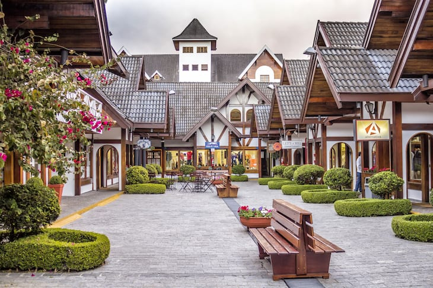

Campos do Jordão (SP) é o município mais alto do Brasil, localizado a 1.628 metros de altitude.
Conhecida como a "Suíça Brasileira", a cidade na Serra da Mantiqueira atrai turistas pelo clima frio, arquitetura europeia e o famoso Festival de Inverno..
